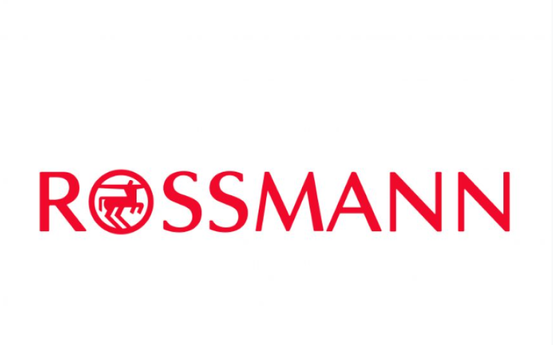
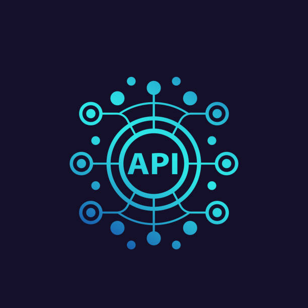

Regression model for sales prediction of the Rossmann pharmacy chain.
In this project, a regression model was trained to forecast sales for the next 6 weeks for Rossmann stores.
The prediction results can be accessed through a Telegram bot, where the user provides the store number, and the model returns the sales forecast for the next 6 weeks.
Additionally, three types of scenarios were defined: a pessimistic, a likely, and an optimistic one.
Tools:
- Pandas
- Matplotlib
- Seaborn
- Sklearn

Web Scraping using Selenium
I developed a web scraping project focused on a cell phone store, using the Selenium library.
With newly acquired web scraping knowledge, I created a Python script that automated the collection of information about cell phone models, including names, prices, and specifications.
I used Selenium to navigate through the store's dynamic pages, ensuring that no data was missed. After collecting the data, I used Python libraries to organize it and exported it to an Excel file.
This project not only provided me with practice in web scraping but also taught me about automation and direct and applicable data manipulation.
Tools:

Analysis of real estate data extracted via the Idealista API.
Data collection of real estate properties using the Idealista API. The idea is to gather data and train models that can make predictions about property prices based on their characteristics.
Tools: